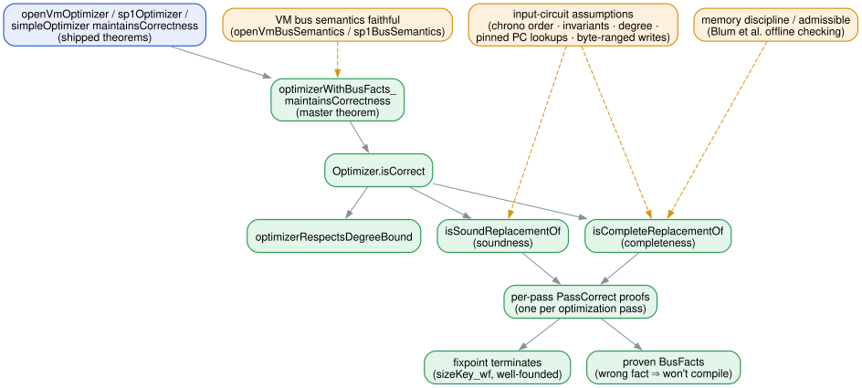

apc-optimizer: A Verified Constraint-System Optimizer
The apc-optimizer authors
This document is a guided reading of the audited surface of apc-optimizer. Every formal
statement below is spliced directly from the compiled Lean source, so what you read is, by
construction, the artifact that is machine-checked — not a transcription of it. Hover any name for
its type; follow any link to its definition.
apc-optimizer is a formally verified optimizer for the constraint systems (circuits) that
powdr (2024)powdr (2024). “powdr: a modular stack for zkVMs and proof systems”. Software, https://github.com/powdr-labs/powdr. .'s autoprecompiles pipeline emits for zero-knowledge virtual machines. It is a
drop-in replacement for powdr's optimize, and it ships with a machine-checked proof that it
preserves a precise notion of circuit equivalence. It targets two zkVMs — OpenVM (2026)OpenVM (2026). “OpenVM Whitepaper”. Whitepaper. . and
Succinct (2024)Succinct (2024). “SP1: a performant, open-source zkVM for RISC-V”. Software, https://github.com/succinctlabs/sp1. . — but the core theorem is proven against an abstract bus semantics, so a new VM is
just a new instance.
The purpose of an audited surface is to make the trust story small and legible: the definitions
and theorems shown here are all one needs to review to believe the optimizer is correct; the
several thousand lines of optimization passes that implement it need no audit, because each pass
carries its own correctness proof and the master theorem composes them.
1. Circuits🔗
A circuit is a list of algebraic constraints together with a list of bus interactions, both over
arithmetic expressions in a finite field. The algebraic constraints are the AIR-style identities of
STARK arithmetization (Ben-Sasson et al., 2018)Eli Ben-Sasson, Iddo Bentov, Yinon Horesh, and Michael Riabzev (2018). “Scalable, transparent, and post-quantum secure computational integrity”. Cryptology ePrint Archive, Paper 2018/046. .; the bus interactions are the multiplicity-weighted messages
of a logarithmic-derivative lookup argument (Haböck, 2022)Ulrich Haböck (2022). “Multivariate lookups based on logarithmic derivatives”. Cryptology ePrint Archive, Paper 2022/1530. ., the mechanism modern zkVMs use for
range checks, table lookups, memory, and inter-chip communication.
An expression is a constant, a variable, or a sum or product of expressions:
🔗inductive type
An arithmetic expression over structured variables and field constants.
Constructors
Expressions are evaluated under an environment assigning a field element to every
variable, and carry a multiplicative degree — the quantity the proving backend bounds.
🔗def
Evaluate an expression under an assignment env of variables to field elements.
🔗def
The multiplicative degree of an expression.
A bus interaction sends a payload tuple to a global bus with a multiplicity. Buses are
how a chip talks to the rest of the system: a stateless bus is a lookup (a chip sends with
multiplicity 0/1, a table chip receives), while a stateful bus (memory, the execution bridge)
carries state such as a timestamp or program counter.
🔗structure
A bus interaction. Typically, α is
Constructor
Fields
Putting the two together, a constraint system is a single chip — its algebraic
constraints and its bus interactions:
🔗structure
A constraint system representing a single zkVM chip.
Constructor
Fields
The side effects of a constraint system are the messages it places on the stateful
buses. This is the externally observable behavior an optimization must preserve.
🔗def
The side effects of a constraint system under a given environment and bus semantics.
The side effects are the tuples sent to the stateful buses.
2. Bus semantics🔗
The meaning of a bus is not baked into the circuit; it is supplied separately by the zkVM's
bus semantics. This is the interface an auditor reviews once per VM. It is deliberately
abstract: the optimizer is proven correct against any semantics of this shape, and a particular
VM is one instance.
🔗structure
The bus semantics of the zkVM.
Constructor
Fields
isStateful : ℕ → Bool
Whether the bus of the given ID changes the state of the VM.
Stateless bus interactions are typically lookups.
violatesConstraint : BusInteraction (ZMod p) → Bool
Whether sending this bus interaction message violates a constraint in another chip.
An example of this is sending a message that conflicts with a lookup table entry.
breaksInvariant : BusInteraction (ZMod p) → Bool
Whether sending this bus interaction message breaks an invariant on which soundness
of the system depends.
For example, a memory bus might have the invariant that all sent values must be in
a certain range.
admissible : List (BusInteraction (ZMod p)) → Prop
A property on stateful bus messages with nonzero multiplicity. Completeness is only
required for assignments whose stateful messages are admissible.
One useful way to use this is to describe the semantics of memory buses, see
ApcOptimizer/MemoryBus.lean.
Two fields deserve emphasis. violatesConstraint is the opaque handle on the lookup tables of
other chips — sending a message that a table would reject is forbidden. admissible is where the
"this is a real trace" assumption lives: it is a predicate on the active stateful messages, and it
is the hinge of the asymmetry described next. For memory buses it encodes the memory discipline of
Blum et al. (1994)Manuel Blum, William S. Evans, Peter Gemmell, Sampath Kannan, and Moni Naor (1994). “Checking the Correctness of Memories”. Algorithmica. 12(2), pp. 225–244. (see the memory discipline).
3. The correctness relation🔗
The heart of the specification is what it means for an optimized circuit to be a faithful
replacement for its input. The relation is deliberately asymmetric, split into soundness and
completeness, because a prover and an honest trace place opposite demands on it.
3.1. What a circuit does🔗
A circuit is satisfied under an environment when every algebraic constraint vanishes and
no active bus interaction violates another chip's table:
🔗def
Whether a constraint system is satisfied under a given environment and bus semantics,
i.e., whether it satisfies all algebraic constraints and does not violate any bus constraints.
An assignment is admissible when its active stateful messages satisfy the VM's
admissible predicate — the real-trace assumption, lifted to a constraint system:
🔗def
Whether a given assignment is admissible under the bus semantics.
Side effects are compared up to net multiplicity per message: an identical-payload send/receive
pair cancels, so two circuits are equivalent when they leave the same net effect on every stateful
bus.
3.2. Soundness🔗
Soundness protects against a cheating prover: anything the optimized circuit accepts, the original
would have accepted too, with the same effect on the rest of the system. It is required for
every assignment, because a malicious prover may choose any.
🔗def
Whether an optimized constraint system is a sound replacement for an original constraint system.
Informally, for any satisfying assignment of the optimized system, there exists a corresponding
satisfying assignment of the original system with equivalent side effects. Also, the optimized
system must maintain all invariants guaranteed by the original system.
3.3. Completeness🔗
Completeness protects against a uselessly strict optimizer that accepts nothing: every real
(admissible) trace of the input is reproduced by the output. It is required only for admissible
assignments — and it is constructive. The optimizer emits, alongside the circuit, a list of
derivations: a computation method for each column it introduced.
🔗inductive type
A method for computing a derived variable's value from other variables, mirroring powdr's
ComputationMethod. For newly introduced variables, this is interpreted by powdr's witness
generator.
quotientOrZero num den is num / den in the field, or 0 when
den = 0; ifEqZero cond thenM elseM picks thenM when cond evaluates to 0, else elseM.
Constructors
🔗def
A list of derived variables paired with how to compute each, in order — the extra output of
the optimizer, consumed by witness generation.
Witness generation runs these methods on the input trace to fill the optimized circuit's columns.
Completeness demands that the result is itself satisfying and admissible, with the same side
effects — which is exactly what lets an input trace be extended to an output trace.
🔗def
Witness generation: reconstruct an output assignment from an input assignment. Every powdr-ID
(input) variable passes through unchanged; every other variable is computed by the method ds
records for it, read from the input variables. This is what powdr runs to fill the optimized
circuit's variables from an input trace.
🔗def
Whether an optimized constraint system is a complete replacement for an original one. Assuming
every input variable carries a powdr ID, then for any admissible satisfying assignment of the
original constraint system, there is a computable assignment of the optimized system that is
itself satisfying and admissible, with equivalent side effects.
3.4. The degree bound🔗
The proving backend caps the multiplicative degree of every expression. The optimizer must respect
that bound: a within-bound input yields a within-bound output.
🔗def
Whether a constraint system stays within a degree bound.
🔗def
Whether an optimizer respects a degree bound: a within-bound input always yields a
within-bound output.
3.5. Correctness🔗
An optimizer is correct for a given bus semantics and degree bound when, on every input,
its output is both a sound and a complete replacement, and it respects the bound:
🔗def
An optimizer is correct if, for every input constraint system, replacing it with the optimized
system is both sound and complete, and the optimizer respects the degree bound b.
4. The memory discipline🔗
Memory and the execution bridge are stateful buses whose admissible predicate is the offline
memory-checking discipline of Blum et al. (1994)Manuel Blum, William S. Evans, Peter Gemmell, Sampath Kannan, and Moni Naor (1994). “Checking the Correctness of Memories”. Algorithmica. 12(2), pp. 225–244., reused in essentially every zkVM and, in its modern
multiplicity-based form, by arguments like Twist-and-Shout (Setty and Thaler, 2025)Srinath Setty and Justin Thaler (2025). “Twist and Shout: Faster memory checking arguments via one-hot addressing and increments”. Cryptology ePrint Archive, Paper 2025/105. .. apc-optimizer
does not prove this discipline; it assumes it about real traces (a completeness-only assumption)
and exploits it to cancel and chain memory accesses. The utility that states it is small and shared
across VMs.
A memory access is a getPrevious/setNew pair carrying opposite multiplicities. Which one is the
send depends on the VM's convention:
🔗inductive type
A memory access is a getPrevious (reading the cell's current value) followed by a setNew
(committing its next value); the two carry opposite multiplicities. The variant is named for
that order — ⟨getPrevious's operation⟩Then⟨setNew's operation⟩ — which fixes which is the
send (multiplicity 1) and which the receive (-1).
Constructors
MemoryBusDirection.receiveThenSend : MemoryBusDirection
getPrevious receives (-1), setNew sends (1) — so setNewMult = 1. This is OpenVM's
memory convention (send the new record, receive the previous), and every VM's execution
bridge, which sends the next CPU state and receives the current one.
🔗structure
A description of a memory bus interaction.
Constructor
Fields
addressFields : List ℕ
Payload positions forming the access key (e.g. OpenVM's two-limb address).
Can be empty for a single global cell.
The discipline itself: after a setNew to an address, the next same-address getPrevious, with no
active same-address message in between, observes the same payload. Note the crucial phrase in list
order — this is why the exporter must list memory interactions in chronological order (see
Assumptions).
🔗def
Given an ordered list of memory bus interaction messages on the same bus, decide whether
it follows the memory bus discipline: after a setNew to a given address (multiplicity
shape.setNewMult), the next getPrevious from the same address (multiplicity
-shape.setNewMult) observes the same payload, with no intervening active messages to the same
address.
5. VM instantiations🔗
5.1. OpenVM🔗
OpenVM (2026)OpenVM (2026). “OpenVM Whitepaper”. Whitepaper. . runs over the BabyBear field. Its bus map assigns each bus id a type — the
execution bridge and memory (stateful), plus range-checker, bitwise/XOR, and PC-lookup tables
(stateless):
🔗inductive type
The OpenVM bus types that appear in the default bus map.
Constructors
The two opaque predicates of the semantics are given concretely. violates encodes each lookup
table (byte and XOR checks, range widths, lookup arities); breaksInvariant encodes the soundness
invariant that data written to the register / main-memory address spaces is byte-ranged.
🔗def
Whether a message conflicts with the lookup table of the bus it is sent on.
🔗def
Whether a message breaks an invariant on which soundness depends.
These assemble into the audited OpenVM semantics, with memory using OpenVM's send-the-new-record
convention:
🔗def
The OpenVM bus semantics for a given bus map (default: the hard-coded default bus map).
5.2. SP1🔗
Succinct (2024)Succinct (2024). “SP1: a performant, open-source zkVM for RISC-V”. Software, https://github.com/succinctlabs/sp1. . (whose Hypercube proof system is described in Hemo et al. (2025)Tamir Hemo, Kevin Jue, Eugene Rabinovich, Gyumin Roh, and Ron D. Rothblum (2025). “Jagged Polynomial Commitments (or: How to Stack Multilinears)”. Cryptology ePrint Archive, Paper 2025/917. .) runs over the
KoalaBear field. It uses a single byte-lookup bus multiplexing AND/OR/XOR/range/comparison
operations, 16-bit memory limbs, and — unlike OpenVM — sends the previous memory record and
receives the new one, so its memory shape carries the reversed direction.
🔗inductive type
The SP1 bus types that appear in the default bus map.
Constructors
ApcOptimizer.SP1.Sp1BusType.byteLookup :
ApcOptimizer.SP1.Sp1BusType
Byte lookup. Format (op, a, b, c), where op selects the operation on bytes b, c:
0 AND (a = b & c), 1 OR, 2 XOR, 3 U8Range (a = 0), 4 LTU (a = [b < c]),
5 MSB (a = b >> 7, c = 0), 6 Range (a < 2^b, c = 0, b ≤ 16).
🔗def
Whether a message conflicts with the lookup table of the bus it is sent on.
🔗def
The SP1 bus semantics for a given bus map (default: the hard-coded default bus map).
6. The theorems🔗
The master theorem states that the optimizer is correct for every bus semantics and every choice
of proven bus facts (the mechanism by which passes learn sound properties of the tables, itself
carrying zero audit surface):
The optimizers actually shipped are one-line instances. The fact-free optimizer, usable with any VM:
The OpenVM optimizer the CLI runs:
And the SP1 optimizer:
7. Trust boundary🔗

Everything reachable from the four theorems above is machine-checked and, per the project's
CI, rests only on Lean's three standard axioms — no sorry, axiom, or native_decide. What an
auditor must still establish by hand is therefore exactly the following, and nothing more:
-
The audited definitions say what you think they say. This document exists to make that check
tractable. The relation is Optimizer.isCorrect; read it, and the soundness/completeness
definitions it unfolds to.
-
The VM semantics faithfully model the real VM. openVmBusSemantics / sp1BusSemantics are
claims about the deployed system's buses. They are audited files precisely because a wrong table
entry here would silently license a wrong optimization.
-
The input-circuit assumptions below hold. The theorem is stated relative to them.
Everything else — that each of the ~dozen passes refines the circuit, that the fixpoint loop
terminates, that degree guards fire — is discharged by the proofs and needs no audit.
7.1. Assumptions🔗
The guarantee is proven against the spec and semantics above. For it to carry over to a real
deployment, the auditor must confirm these properties of the input circuits (stated here for
OpenVM; SP1 is analogous):
Memory and execution-bridge interactions are listed in chronological order. The admissible
predicate pairs each setNew with the next same-address getPrevious in list order, so the
exporter must emit these interactions in time order. Otherwise completeness may fail.
The input guarantees invariants and respects the degree bound. The optimizer preserves
guaranteesInvariants and withinDegree, but only assuming the input has them (e.g. that written
memory limbs are byte-range-checked).
PC lookups are pinned. The semantics checks only the arity of a PC lookup, not the program
table. We assume constraints fixing the lookup fields to constants have already been added to the
input, so the optimizer cannot alter them.
Every memory writer is byte-range-checked. The semantics treats a memory receive from the
register / main-memory address spaces with a non-byte data limb as conflicting, so the optimizer
may assume received memory words are bytes. This holds only if every chip sending into those
address spaces maintains OpenVM's byte-range memory discipline.